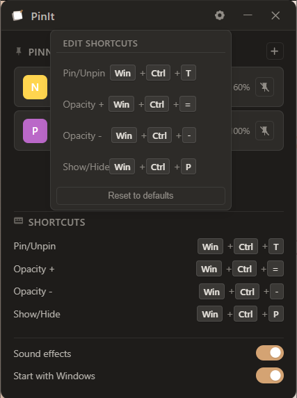

Small app. One job.
Pin with one key
Press Win+Ctrl+T to pin or unpin the window you are using.
See through it
Fade a pinned window so you can still watch your work behind it.
It remembers
Your pins come back on their own the next time you turn on your PC.

Make it yours.
Do not like the default keys? Set your own in a click. Open the shortcuts panel and pick the keys that feel right.
- Pick your own keys for every action
- Turn sound on or off
- Start with Windows, or not
Quick answers
How do I keep a window on top in Windows 11?
Install PinIt, click the window you want to keep visible, and press Win+Ctrl+T. It stays on top until you unpin it.
What is the shortcut to pin a window?
Press Win+Ctrl+T. You can pick your own shortcut inside the app.
Can I make a window transparent?
Yes. Pin a window, then press Win+Ctrl+- to fade it and Win+Ctrl+= to make it solid again.
Is PinIt free?
Yes. PinIt is free and open source under the Apache 2.0 license. The code is on GitHub.
Get PinIt
Free, tiny, and ready in under a minute.
2.5 MB · Windows 10 and 11